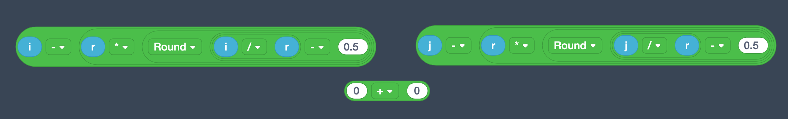

途中に出てくる円柱の半径部分は何がどうなっているのか
左辺，右辺はそれぞれ整数iを整数rで割った余りを求めています
tinkercadでは，i/r（i ÷ rのこと）の解が小数まで求められるため，
-0.5をしたのちRoundブロック（小数点以下を四捨五入）で囲うことで，
実質的に小数点以下切り捨ての計算を行なっています．つまり商が求まるのでrをかけてiから引くことで余りを求めています．
一般的なプログラミング言語ではモジュロと呼ばれる，余りを求める関数が初めから用意されていることがほとんどです．